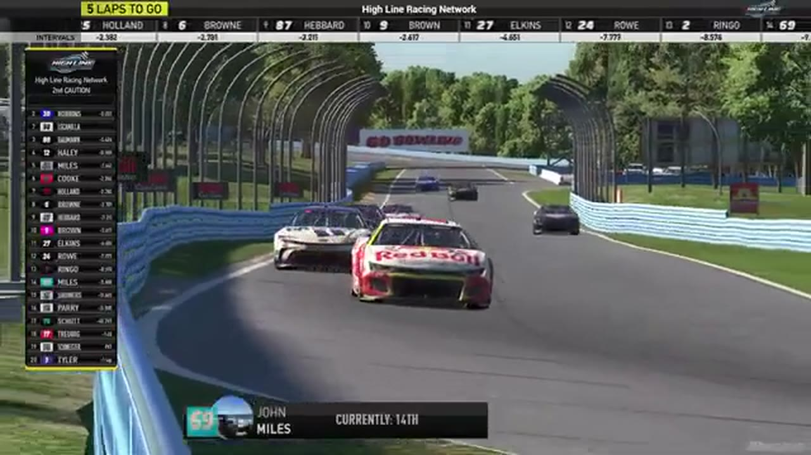

John Miles
Team assignment not stated in the structured owner record.
AN OFFICIAL-TAPE FOOTPRINT, NOT A RESULTS CLAIM
- Official files
- 13
- Central editions
- 0
- Exact tape cues
- 9
- Accepted podiums
- 0
John Miles appears in 13 official HLRN broadcast files across Seasons 1, 2. The current result ledger does not assign this driver a supported top-three finish. A consistently stated team affiliation remains open for owner review. The currently indexed source window runs from November 17, 2025 through July 20, 2026.
The primary chapter index supplies 9 direct jump points. Talladega is the most frequent named track in the current appearance ledger. The densest direct-tape categories are incident (3 cues) and battle (3 cues). Those counts describe where the name is easiest to find; they are not fault, pace, or performance grades. A source-attributed car frame is published with its original video and timestamp. That is the current discovery map for John Miles.
Official name signals are used for discovery only. They do not become starts, points, incident counts, or an ability grade. This page is deliberately detailed about the tape and restrained about the unavailable competition record. Separately, 4 Highline Live files sit on the bonus shelf and never enter the official season ledger. The displayed name is labeled broadcast lower third confirmed; that status remains visible so an owner roster can strengthen or correct the identity without rewriting the evidence trail. Those boundaries define John Miles's public HLRN file.
9 featured race-tape cues
These are discovery routes into complete HLRN broadcasts, not performance grades or inferred results.
- S1 / R12 · STAGE
Jerry Fassett and Jamie Shaw enter Daytona's Stage 1 scoring call
S1 / R12 at 52:31: The broadcast enters a stage-scoring discussion at Daytona with Jerry Fassett, Jamie Shaw, and John Miles in the scoring call. The clip preserves the on-air timing or points call without promoting it into a complete stage result; the accepted feature result ledger remains separate.
Daytona - S1 / R7 · BATTLE
Nick Bowman leads Michigan as John Miles heads to pit road
A John Miles off-track signal sends the No. 69 toward pit road, while the live camera returns to Nick Bowman leading with eight laps remaining. The card preserves both states without labeling Bowman as part of the incident.
Michigan - S1 / R1 · BATTLE
John Miles takes point as Daytona's caution freezes the field
After two cars head to pit road, John Miles advances on the bottom and reaches the lead as the caution appears. The booth then works out whether the Anaheim Hammer should be scored first at the freeze.
Daytona - S1 / R1 · BATTLE
John Miles moves into the Daytona lead
S1 / R1 at 1:30:26: The Daytona pack compresses through a lead change while John Miles are named on the call. The chapter keeps the live battle intact and makes no finishing-order claim.
Daytona - S1 / R4 · STRATEGY
Damaged cars cycle through superspeedway pit road
HLRN returns live under caution as the damaged No. 57 reaches pit road, John Miles enters, and Trevor Haley exits with Juan Escamilla. The card documents the caution pit cycle without turning the No. 57's damage into a new incident.
iRacing Superspeedway - S1 / R1 · STRATEGY
Jerry Fassett enters the Daytona pit-strategy swing
S1 / R1 at 1:14:32: Pit timing starts to reorganize the field, with Jerry Fassett, Zack Cato, Francisco Bacayo, and John Miles named in the sequence. The clip is a strategy receipt from the primary Daytona broadcast, not a reconstructed scoring sheet.
Daytona - S1 / R10 · INCIDENT
John Miles's slowdown sparks a Kansas restart wreck
Seconds after the green, John Miles slows in the pack and takes a hit that draws Grant Wesley, Ryan Wilson, and others into the crash. The primary replay does not establish why Miles lost speed.
Kansas - S1 / R6 · INCIDENT
John Miles's connection issue sweeps Easton Collins into trouble
HLRN follows an Easton Collins damage signal back to John Miles, whose car appears to blink and move down into Collins. The booth continues searching for the start of Miles's problem rather than assigning Ethan Moreno to the incident.
Las Vegas - S1 / R1 · INCIDENT
A new Daytona wreck interrupts Jaden Porter's inside-line run
Jaden Porter is pinned to the inside behind John Miles and Ted Rakeese when another wreck erupts. HLRN receives damage signals but does not immediately identify the cause, so the card preserves Porter's race position without blaming him.
Daytona
Verified team history is not consistently stated. No position-specific top-three result is currently accepted. The public spelling has broadcast identity support; an owner roster can still add legal-name, number, and team-history detail.